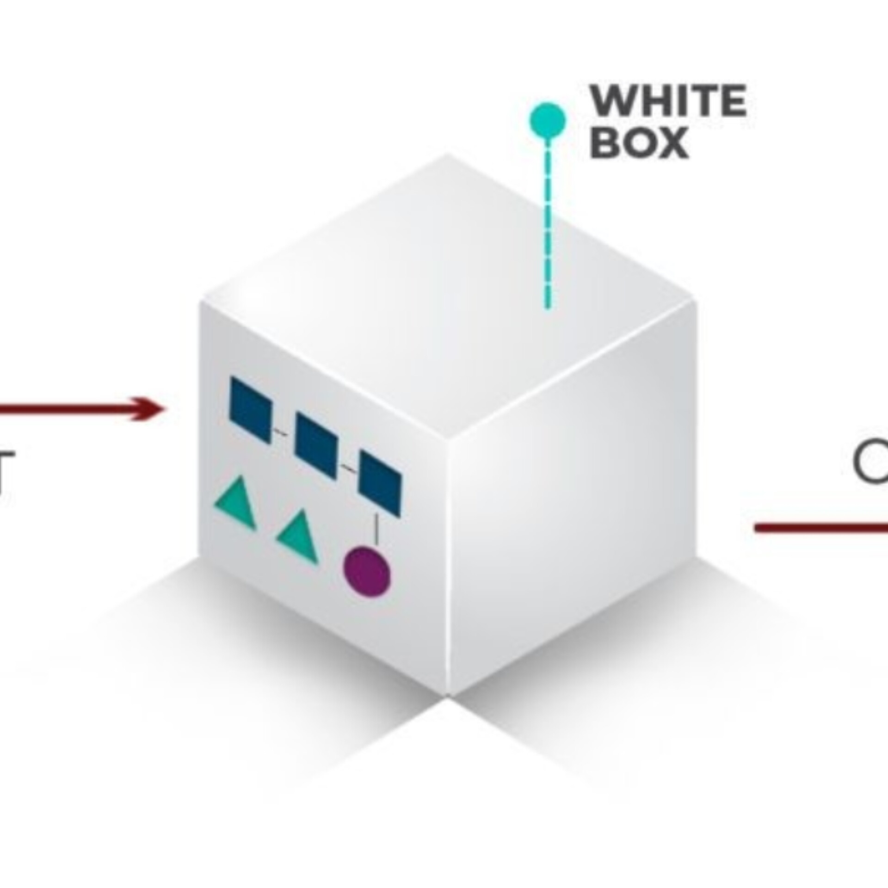

O teste de caixa branca é uma técnica de teste de software que analisa a estrutura interna e o código-fonte de um sistema.
Ele permite verificar se os caminhos, condições, funções e instruções do programa estão funcionando corretamente.
Diferentemente do teste de caixa preta, que avalia apenas as entradas e saídas, o teste de caixa branca considera o funcionamento interno do software.
É muito utilizado por desenvolvedores para identificar erros de lógica e melhorar a qualidade e a confiabilidade do código.